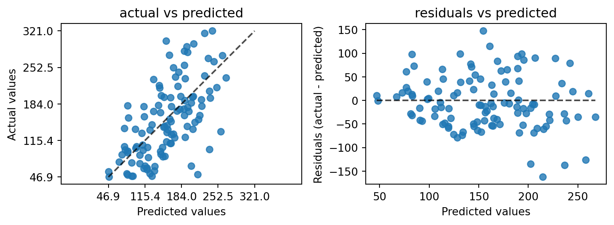
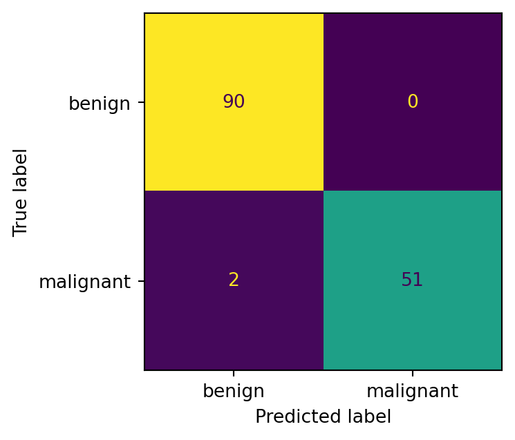
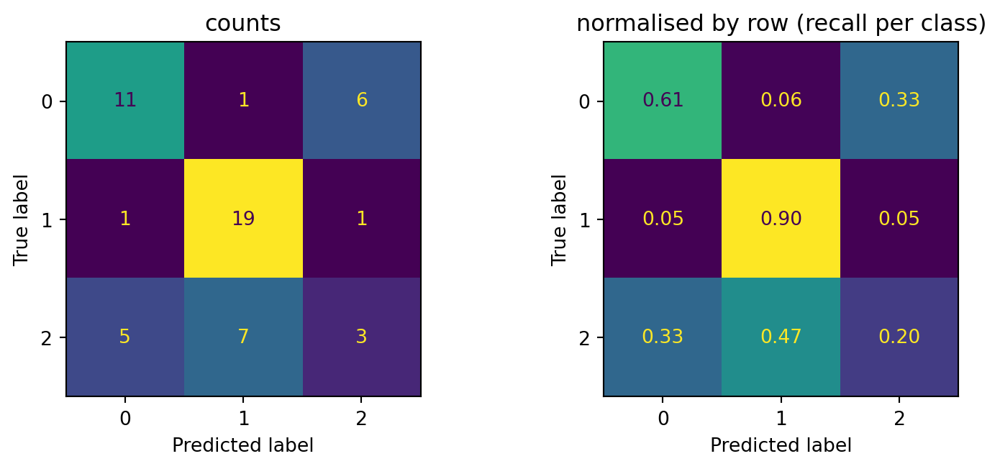
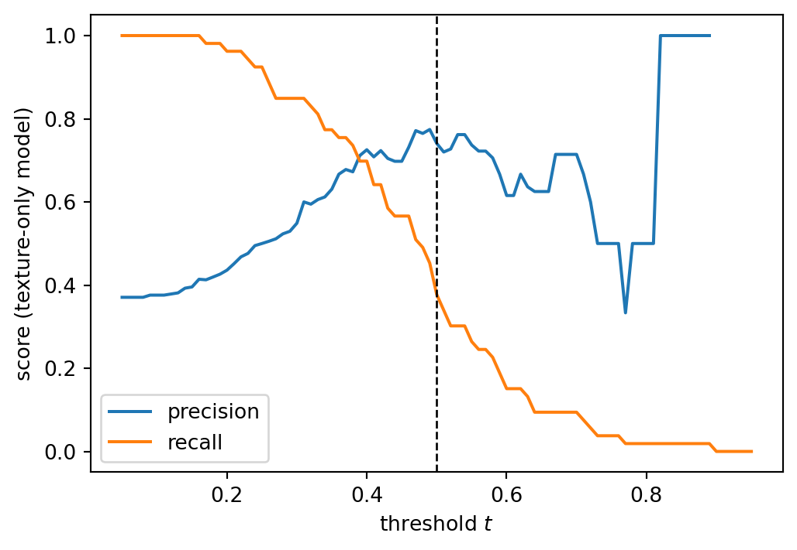
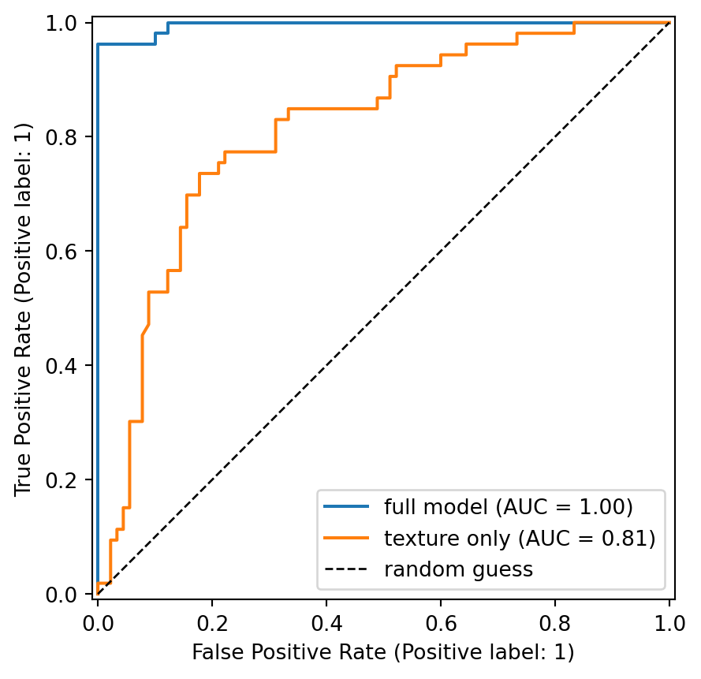
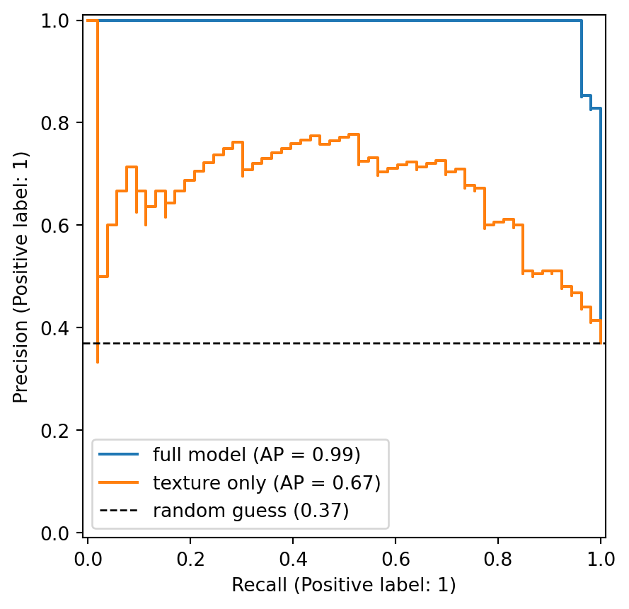
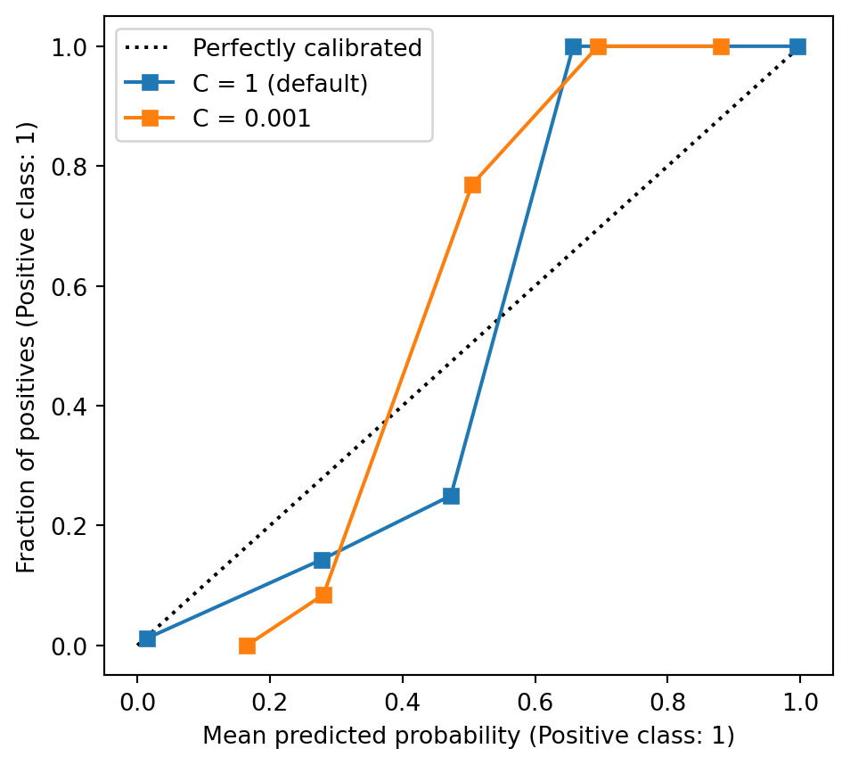
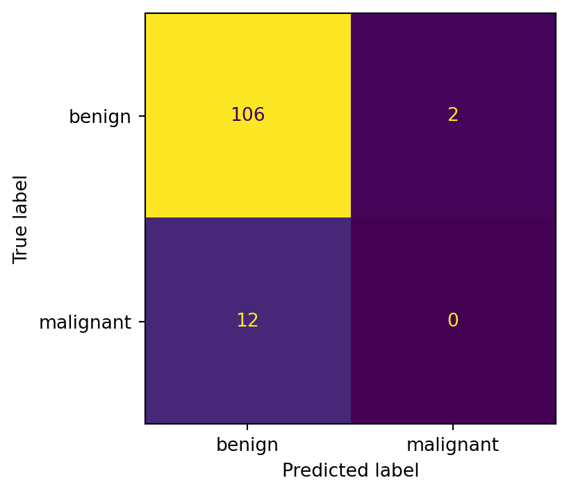
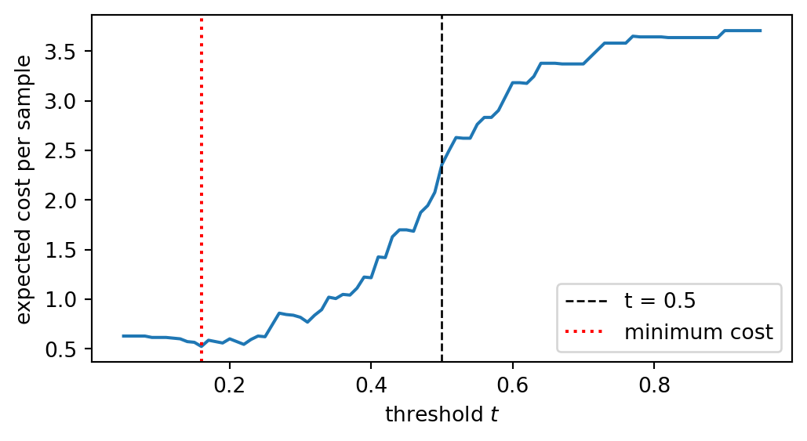
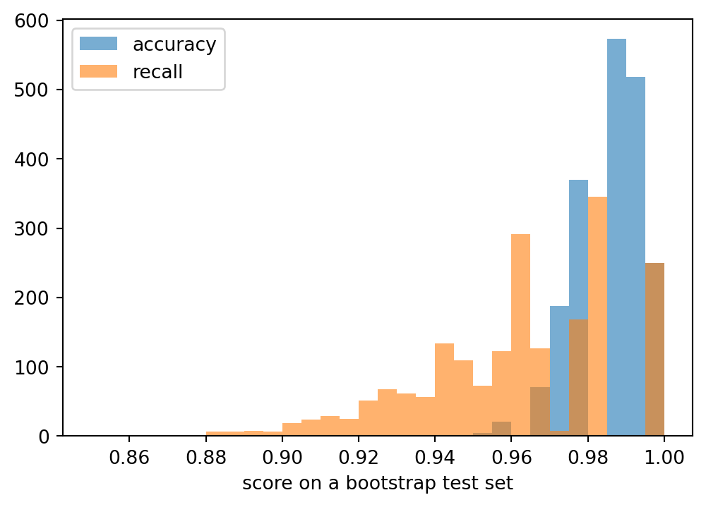

from sklearn.datasets import load_breast_cancer, load_diabetes
from sklearn.dummy import DummyClassifier, DummyRegressor
from sklearn.model_selection import train_test_split
cancer = load_breast_cancer()
X, y = cancer.data, 1 - cancer.target # 1 = malignant, as in 3a
X_train, X_test, y_train, y_test = train_test_split(
X, y, test_size=0.25, stratify=y, random_state=0)
diabetes = load_diabetes()
Xd, yd = diabetes.data, diabetes.target
Xd_train, Xd_test, yd_train, yd_test = train_test_split(
Xd, yd, test_size=0.25, random_state=0)
dummy_c = DummyClassifier().fit(X_train, y_train) # most frequent class
dummy_r = DummyRegressor().fit(Xd_train, yd_train) # training mean
print(f"breast cancer, majority class: accuracy = {dummy_c.score(X_test, y_test):.3f}")
print(f"diabetes, mean predictor : R2 = {dummy_r.score(Xd_test, yd_test):.3f}")Evaluation metrics
Introduction to Artificial Intelligence and Machine Learning 4
Jiabao Xu
Jiabao.Xu@glasgow.ac.uk
Massimo Vassalli
massimo.vassalli@glasgow.ac.uk
How good is a model?
We have already evaluated our models with a few numbers: MSE, RMSE and \(R^2\) for linear regression (2b), accuracy and the confusion matrix for logistic regression (3a). Today we build the full toolbox:
- a baseline to compare every score with
- regression metrics, and what each one rewards
- classification metrics built from the confusion matrix, for two or more classes
- the decision threshold, ROC and precision-recall curves
- probabilities as predictions: log-loss, Brier score, calibration
- imbalanced data, the cost of errors, and how sure we can be of a score
Next lecture (4b) uses these metrics to compare models and choose their settings.
Loss and metric
The loss and the metric are both measures of error, but they have different jobs.
| Loss (strategy \(L\)) | Evaluation metric | |
|---|---|---|
| Purpose | drives the learning | judges the result |
| Used on | training data, by the algorithm | validation and test data, by us |
| Requirements | smooth, ideally convex, easy to optimise | meaningful for the task, easy to interpret |
| Examples | MSE, log-loss | MAE, RMSE, accuracy, recall, AUROC, cost |
Sometimes they coincide (MSE can be both), often they do not: logistic regression minimises the log-loss, but a screening test is judged by how many malignant cases it finds. What you optimise shapes the model; what you measure decides whether it is good enough for the problem.
Point and probabilistic predictions
A model can return two kinds of output, and they are evaluated differently:
- a point prediction: one value, \(\hat y_i\) (a number in regression, a class in classification). Metrics compare \(\hat y_i\) with \(y_i\): MSE, MAE, accuracy, precision, recall.
- a probabilistic prediction: how likely each outcome is, e.g. \(\hat p_i = P(y_i = 1 \mid \mathbf{x}_i)\) in logistic regression. Metrics judge the probabilities themselves: log-loss, Brier score, calibration, and curves over all thresholds (ROC, PR).
For a classifier the two are connected by the threshold \(t\): \(\hat y_i = 1\) if \(\hat p_i \ge t\). Point metrics depend on \(t\); probabilistic metrics do not.
Always start from a baseline
A score means little on its own. Is an accuracy of 0.9 good? It depends on how easy the problem is. A baseline is the score of a model that ignores the features:
- classification: always predict the most frequent class (
DummyClassifier) - regression: always predict the mean of the training targets (
DummyRegressor)
breast cancer, majority class: accuracy = 0.629
diabetes, mean predictor : R2 = -0.000The majority class gives the 0.63 we met in 3a. The mean predictor gives \(R^2 \approx 0\) by construction, slightly negative on the test set because it uses the mean of the training targets. Report every score next to its baseline.
Regression metrics
From 2b, for a test set of \(n\) samples:
\[ \text{MSE} = \frac{1}{n}\sum_{i=1}^{n}(y_i - \hat{y}_i)^2, \qquad \text{RMSE} = \sqrt{\text{MSE}}, \qquad R^2 = 1 - \frac{\sum_{i}(y_i - \hat{y}_i)^2}{\sum_{i}(y_i - \bar{y})^2} \]
Two more, based on absolute errors:
\[ \text{MAE} = \frac{1}{n}\sum_{i=1}^{n}|y_i - \hat{y}_i|, \qquad \text{MedAE} = \operatorname{median}_i\,|y_i - \hat{y}_i| \]
RMSE, MAE and MedAE are in the units of \(y\), so they can be read as a typical error; \(R^2\) has no units and compares the model with the mean predictor.
MAE or RMSE?
Squaring makes large errors count much more than small ones. RMSE and MAE can therefore disagree on which model is better. Two models, ten test samples each:
err_A = np.array([2, 2, 2, 2, 2, 2, 2, 2, 2, 30]) # accurate, one big miss
err_B = np.array([6, 6, 6, 6, 6, 6, 6, 6, 6, 6]) # always a bit off
for name, e in [("A", err_A), ("B", err_B)]:
print(f"model {name}: MAE = {np.mean(np.abs(e)):4.1f} "
f"RMSE = {np.sqrt(np.mean(e**2)):4.1f} MedAE = {np.median(np.abs(e)):4.1f}")model A: MAE = 4.8 RMSE = 9.7 MedAE = 2.0
model B: MAE = 6.0 RMSE = 6.0 MedAE = 6.0MAE prefers A, RMSE prefers B. Neither is wrong: they answer different questions.
- RMSE when large errors are disproportionately bad (a bridge load, a drug dose)
- MAE when every unit of error costs the same, or when a few outliers in the data should not dominate
- MedAE to describe the typical error, ignoring the worst cases entirely
This mirrors the choice of the loss in 2b: MSE is the mean of a Gaussian, MAE its median, Huber a compromise.
Relative errors: MAPE
Sometimes an error of 5 matters more on a small value than on a large one. The mean absolute percentage error measures relative errors:
\[ \text{MAPE} = \frac{1}{n}\sum_{i=1}^{n}\frac{|y_i - \hat{y}_i|}{|y_i|} \]
from sklearn.metrics import mean_absolute_percentage_error
y_true = np.array([1.0, 10.0, 100.0])
y_pred = y_true + 5 # the same absolute error everywhere
print("absolute errors :", np.abs(y_true - y_pred))
print("relative errors :", np.abs(y_true - y_pred) / np.abs(y_true))
print(f"MAPE = {mean_absolute_percentage_error(y_true, y_pred):.2f}")absolute errors : [5. 5. 5.]
relative errors : [5. 0.5 0.05]
MAPE = 1.85Warning
MAPE explodes when some \(y_i\) are close to zero, and is undefined when \(y_i = 0\). scikit-learn returns it as a fraction, not a percentage. Use it only for targets that stay well away from zero, when relative errors are what matters.
Diabetes: all metrics together
The multivariate model of 2b, compared with two baselines (mean and median predictor):
from sklearn.linear_model import LinearRegression
from sklearn.metrics import (mean_absolute_error, median_absolute_error,
r2_score, root_mean_squared_error)
models = {"mean": DummyRegressor(strategy="mean"),
"median": DummyRegressor(strategy="median"),
"linear": LinearRegression()}
print(f"{'':7s} {'RMSE':>6s} {'MAE':>6s} {'MedAE':>6s} {'MAPE':>6s} {'R2':>6s}")
for name, est in models.items():
yp = est.fit(Xd_train, yd_train).predict(Xd_test)
print(f"{name:7s} {root_mean_squared_error(yd_test, yp):6.1f} "
f"{mean_absolute_error(yd_test, yp):6.1f} {median_absolute_error(yd_test, yp):6.1f} "
f"{mean_absolute_percentage_error(yd_test, yp):6.2f} {r2_score(yd_test, yp):6.2f}") RMSE MAE MedAE MAPE R2
mean 70.5 58.3 50.9 0.53 -0.00
median 71.8 58.3 51.0 0.48 -0.04
linear 56.4 45.1 40.5 0.38 0.36The model reduces the typical error from about 58 to about 45 units of disease progression (MAE), roughly 38% in relative terms (MAPE). The median predictor has a lower MAPE than the mean predictor but a worse RMSE: again, the metric decides the winner. Disease progression ranges from 25 to 346, so MAPE is usable here.
Looking at the errors
A single number hides where the model is wrong. scikit-learn’s PredictionErrorDisplay draws the two standard plots:
from sklearn.metrics import PredictionErrorDisplay
lin = LinearRegression().fit(Xd_train, yd_train)
yd_pred = lin.predict(Xd_test)
fig, axs = plt.subplots(1, 2, figsize=(8, 3))
PredictionErrorDisplay.from_predictions(yd_test, yd_pred, kind="actual_vs_predicted", ax=axs[0])
PredictionErrorDisplay.from_predictions(yd_test, yd_pred, kind="residual_vs_predicted", ax=axs[1])
axs[0].set_title("actual vs predicted")
axs[1].set_title("residuals vs predicted")
plt.tight_layout()
Points far from the diagonal (left) or from zero (right) are the large errors that RMSE emphasises. The model compresses the predictions: it overestimates low progressions and underestimates high ones, a pattern no single metric reveals.
Regression metrics at a glance
| Metric | Units | Large errors | scikit-learn | scoring (4b) |
|---|---|---|---|---|
| MSE | \(y^2\) | strongly penalised | mean_squared_error |
"neg_mean_squared_error" |
| RMSE | \(y\) | strongly penalised | root_mean_squared_error |
"neg_root_mean_squared_error" |
| MAE | \(y\) | linear | mean_absolute_error |
"neg_mean_absolute_error" |
| MedAE | \(y\) | ignored | median_absolute_error |
"neg_median_absolute_error" |
| MAPE | fraction | relative | mean_absolute_percentage_error |
"neg_mean_absolute_percentage_error" |
| \(R^2\) | none | strongly penalised | r2_score |
"r2" |
Note
In scikit-learn a score is always “higher is better”. Error metrics are therefore used with a minus sign (neg_...) when models are compared automatically, as we will do in 4b.
Classification metrics
Back to breast cancer and the pipeline of 3a, a StandardScaler followed by a LogisticRegression on all 30 features. We call it the full model (model in the code). The positive class (\(y = 1\)) is malignant, the class we want to detect.
from sklearn.linear_model import LogisticRegression
from sklearn.metrics import ConfusionMatrixDisplay
from sklearn.pipeline import make_pipeline
from sklearn.preprocessing import StandardScaler
model = make_pipeline(StandardScaler(), LogisticRegression())
model.fit(X_train, y_train)
y_pred = model.predict(X_test)
p_test = model.predict_proba(X_test)[:, 1]
fig, ax = plt.subplots(figsize=(4, 3.5))
_ = ConfusionMatrixDisplay.from_predictions(
y_test, y_pred, display_labels=["benign", "malignant"],
ax=ax, colorbar=False)
Rows are the true classes, columns the predictions:
| predicted 0 | predicted 1 | |
|---|---|---|
| true 0 | TN | FP |
| true 1 | FN | TP |
Every classification metric of this section is a combination of these four numbers.
Accuracy is not enough
Three classifiers decide whether a news article is about politics (positive) or not, on a test set of 100 articles, 5 of them political:
| C1 | C2 | C3 | |
|---|---|---|---|
| TP | 0 | 4 | 1 |
| FN | 5 | 1 | 4 |
| FP | 0 | 4 | 0 |
| TN | 95 | 91 | 95 |
| accuracy | 0.95 | 0.95 | 0.96 |
C1 never predicts “politics”: it is the majority-class baseline, and it still scores 0.95. C3 has the highest accuracy, but finds only one of the five political articles. C2 finds four of them, at the price of four false alarms. Accuracy cannot tell these behaviours apart, because positives are rare and TN dominates the count.
Example adapted from Zollanvari, Machine Learning with Python.
Precision and recall
Two questions about the positive class, each answered by one row or one column of the confusion matrix:
Precision: of the samples predicted positive, how many are really positive? \[ \text{precision} = \frac{TP}{TP + FP} \] How much can I trust an alarm?
Recall (sensitivity, true positive rate): of the samples that are positive, how many did we find? \[ \text{recall} = \frac{TP}{TP + FN} \] How many cases do I miss?
For the negative class, the analogue of recall is the specificity (true negative rate), \(TN/(TN+FP)\). In medicine, sensitivity and specificity are the standard pair; in information retrieval and machine learning, precision and recall.
Precision and recall: the news example
| C1 | C2 | C3 | |
|---|---|---|---|
| accuracy | 0.95 | 0.95 | 0.96 |
| precision | 0/0 | 4/8 = 0.50 | 1/1 = 1.00 |
| recall | 0/5 = 0.00 | 4/5 = 0.80 | 1/5 = 0.20 |
Now the three behaviours are visible: C1 is useless, C3 is precise but misses most positives, C2 finds most positives but half of its alarms are false. Which is better depends on the application: a politics filter for a news app may prefer C3, a fact-checker who must not miss anything prefers C2.
Note
Precision is undefined when nothing is predicted positive (C1). scikit-learn then returns 0 with a warning; the argument zero_division controls this.
The F-score
To compare models with a single number that accounts for both, the \(F_1\) score is the harmonic mean of precision (\(P\)) and recall (\(R\)):
\[ F_1 = \frac{2}{\frac{1}{P} + \frac{1}{R}} = \frac{2PR}{P + R} = \frac{2\,TP}{2\,TP + FP + FN} \]
The harmonic mean is dominated by the smaller of the two: a model cannot hide a poor recall behind an excellent precision. For C2, \(F_1 = 0.62\); for C3, \(F_1 = 0.33\).
When one of the two matters more, the \(F_\beta\) score weights recall \(\beta\) times as much as precision:
\[ F_\beta = \frac{(1 + \beta^2)\,P R}{\beta^2 P + R} \]
\(\beta = 2\) favours recall (screening, safety), \(\beta = 0.5\) favours precision (spam filters, recommendations). Note that TN never appears: F-scores focus on the positive class.
In scikit-learn
precision recall f1-score support
benign 0.978 1.000 0.989 90
malignant 1.000 0.962 0.981 53
accuracy 0.986 143
macro avg 0.989 0.981 0.985 143
weighted avg 0.986 0.986 0.986 143
One line per class, each treated in turn as the positive one; support is the number of true samples of the class. For malignant, precision is 1.0 (no false alarms) and recall 0.96 (two missed cases), as in the confusion matrix. The last two lines average over the classes: next slide.
More than two classes
The wine dataset: 178 wines from three cultivars, 13 chemical features. To make the problem harder (and the errors visible), we use only two features, alcohol and magnesium.
from sklearn.datasets import load_wine
wine = load_wine()
Xw, yw = wine.data[:, [0, 4]], wine.target # alcohol, magnesium
Xw_train, Xw_test, yw_train, yw_test = train_test_split(
Xw, yw, test_size=0.3, stratify=yw, random_state=0)
wine_model = make_pipeline(StandardScaler(), LogisticRegression()).fit(Xw_train, yw_train)
yw_pred = wine_model.predict(Xw_test)
fig, axs = plt.subplots(1, 2, figsize=(8, 3.5))
ConfusionMatrixDisplay.from_predictions(yw_test, yw_pred, ax=axs[0], colorbar=False)
ConfusionMatrixDisplay.from_predictions(yw_test, yw_pred, normalize="true",
values_format=".2f", ax=axs[1], colorbar=False)
axs[0].set_title("counts")
axs[1].set_title("normalised by row (recall per class)")
plt.tight_layout()
With \(c\) classes the confusion matrix is \(c \times c\). Normalising each row by its total gives the recall of each class on the diagonal: class 1 is recognised well, while class 2 is found only once in five times, mixed up with both other cultivars.
Averaging over classes
With \(c\) classes, precision, recall and \(F_1\) are first computed per class, treating class \(k\) as positive and all the others as negative (one-vs-rest). This gives \(c\) values, e.g. \(F_{1,k}\) for \(k = 1, \dots, c\), and \(n_k\) test samples (the support) in each class. They are combined in three ways:
| Average | Definition | Every class counts… |
|---|---|---|
| macro | \(\displaystyle F_1^{\text{macro}} = \frac{1}{c}\sum_{k=1}^{c} F_{1,k}\) | the same, however rare |
| weighted | \(\displaystyle F_1^{\text{weighted}} = \sum_{k=1}^{c} \frac{n_k}{n}\, F_{1,k}\) | in proportion to its size |
| micro | pool the counts first: \(\displaystyle P^{\text{micro}} = \frac{\sum_k TP_k}{\sum_k (TP_k + FP_k)}\), same for recall and \(F_1\) | through its samples, one by one |
Why micro equals accuracy: in a single-label problem, every wrong prediction is a false positive for the predicted class and a false negative for the true class. So \(\sum_k FP_k = \sum_k FN_k\) = number of errors, and micro precision, micro recall and micro \(F_1\) all reduce to (correct predictions) / \(n\).
Averaging on wine
from sklearn.metrics import accuracy_score, f1_score
print(classification_report(yw_test, yw_pred, digits=3))
f1_k = f1_score(yw_test, yw_pred, average=None) # one value per class
n_k = np.bincount(yw_test) # support
print("macro by hand:", round(f1_k.mean(), 3))
print("weighted by hand:", round(np.sum(n_k / n_k.sum() * f1_k), 3))
print("accuracy :", round(accuracy_score(yw_test, yw_pred), 3)) precision recall f1-score support
0 0.647 0.611 0.629 18
1 0.704 0.905 0.792 21
2 0.300 0.200 0.240 15
accuracy 0.611 54
macro avg 0.550 0.572 0.553 54
weighted avg 0.573 0.611 0.584 54
macro by hand: 0.553
weighted by hand: 0.584
accuracy : 0.611Class 2 has a poor \(F_1\) (0.24). The macro average gives it a full third of the weight and drops to 0.55; the weighted average gives it 15/54 of the weight (0.58); the micro average equals the accuracy (0.61, the accuracy line of the report). The gap between macro and the others signals that some class is handled badly.
- macro: every class matters equally (a rare fault type, a rare disease)
- weighted or micro: what matters is the overall rate of correct predictions
The decision threshold
In 3a we saw that the threshold \(t = 0.5\) is a choice. To see what moving it does, we need a model that makes mistakes: the full model of the classification section (scaler and logistic regression on all 30 features) is almost perfect on this split, with only two errors. We add a deliberately weak model, the same pipeline on a single feature, mean texture: the texture-only model (weak in the code).
names = list(cancer.feature_names)
j = names.index("mean texture")
weak = make_pipeline(StandardScaler(), LogisticRegression()).fit(X_train[:, [j]], y_train)
p_weak = weak.predict_proba(X_test[:, [j]])[:, 1]
print(f"full model : accuracy = {model.score(X_test, y_test):.3f}")
print(f"texture only : accuracy = {weak.score(X_test[:, [j]], y_test):.3f}")
print(f"baseline : accuracy = {dummy_c.score(X_test, y_test):.3f}")full model : accuracy = 0.986
texture only : accuracy = 0.720
baseline : accuracy = 0.629Texture alone is informative (better than the baseline) but far from enough. We use it to study the threshold, and compare the two models along the way.
Moving the threshold
For each threshold \(t\), predict \(\hat y_i = 1\) if \(\hat p_i \ge t\), and compute precision and recall:
from sklearn.metrics import precision_score, recall_score
ts = np.linspace(0.05, 0.95, 91)
prec = [precision_score(y_test, p_weak >= t, zero_division=np.nan) for t in ts]
rec = [recall_score(y_test, p_weak >= t) for t in ts]
fig, ax = plt.subplots(figsize=(6, 4))
ax.plot(ts, prec, label="precision")
ax.plot(ts, rec, label="recall")
ax.axvline(0.5, color="k", linestyle="--", linewidth=1)
ax.set_xlabel("threshold $t$")
ax.set_ylabel("score (texture-only model)")
_ = ax.legend()
A low threshold flags almost everything: recall close to 1, poor precision. A high threshold flags only the most certain cases: higher precision, many missed cases. Precision and recall are traded against each other by the threshold, not by the model. Above \(t \approx 0.9\) nothing is flagged and precision is undefined; just below, it is computed on very few samples and becomes erratic.
The ROC curve
The receiver operating characteristic curve summarises all thresholds at once. For each \(t\) it plots
\[ \text{TPR} = \frac{TP}{TP+FN} \;(\text{recall}) \quad\text{against}\quad \text{FPR} = \frac{FP}{FP+TN} = 1 - \text{specificity} \]
from sklearn.metrics import RocCurveDisplay
fig, ax = plt.subplots(figsize=(5.5, 5))
RocCurveDisplay.from_predictions(y_test, p_test, name="full model", ax=ax)
RocCurveDisplay.from_predictions(y_test, p_weak, name="texture only", ax=ax)
ax.plot([0, 1], [0, 1], "k--", linewidth=1, label="random guess")
_ = ax.legend(loc="lower right")
Each point of a curve is one threshold: \(t = 1\) at the bottom left (nothing flagged), \(t = 0\) at the top right (everything flagged). A perfect classifier passes through the top-left corner; a random one follows the diagonal.
The area under the ROC curve
The AUROC (or ROC AUC) condenses the curve into one number between 0.5 (random) and 1 (perfect).
AUROC full model : 0.996
AUROC texture only: 0.815It has a direct interpretation: the AUROC is the probability that a randomly chosen positive sample receives a higher score \(\hat p\) than a randomly chosen negative one. It measures how well the model ranks the samples, independently of the threshold and of the class proportions.
Note
roc_auc_score needs the probabilities (or scores), not the predicted classes: with y_pred you would get the AUROC of a single point.
The precision-recall curve
The PR curve plots precision against recall for every threshold. Its area is summarised by the average precision (AP).
from sklearn.metrics import PrecisionRecallDisplay
fig, ax = plt.subplots(figsize=(5.5, 5))
PrecisionRecallDisplay.from_predictions(y_test, p_test, name="full model", ax=ax)
PrecisionRecallDisplay.from_predictions(y_test, p_weak, name="texture only", ax=ax)
ax.axhline(y_test.mean(), color="k", linestyle="--", linewidth=1,
label=f"random guess ({y_test.mean():.2f})")
_ = ax.legend(loc="lower left")
A random classifier has a precision equal to the fraction of positives, whatever the recall: the baseline of the PR curve depends on the class proportions, unlike the diagonal of the ROC curve. This makes PR curves the better tool when positives are rare (next section).
Probabilities as predictions
Logistic regression returns probabilities. Are they good probabilities? Two metrics evaluate \(\hat p_i\) directly, without a threshold:
\[ \text{log-loss} = -\frac{1}{n}\sum_{i=1}^{n}\Big[y_i\ln\hat p_i + (1 - y_i)\ln(1 - \hat p_i)\Big], \qquad \text{Brier} = \frac{1}{n}\sum_{i=1}^{n}(\hat p_i - y_i)^2 \]
- the log-loss is the loss minimised by logistic regression (3a), now used as a metric on the test set; confident mistakes are punished very hard
- the Brier score is the MSE of the probabilities: between 0 (perfect) and 1, gentler with confident mistakes
full model : log-loss = 0.076 Brier = 0.023
texture only: log-loss = 0.541 Brier = 0.181Calibration
A model is calibrated if, among the samples predicted with \(\hat p \approx 0.8\), about 80% are really positive. A calibration curve groups the test samples by predicted probability and plots the observed fraction of positives in each group.
from sklearn.calibration import CalibrationDisplay
shrunk = make_pipeline(StandardScaler(), LogisticRegression(C=0.001))
shrunk.fit(X_train, y_train)
fig, ax = plt.subplots(figsize=(5.5, 5))
CalibrationDisplay.from_estimator(model, X_test, y_test, n_bins=5,
name="C = 1 (default)", ax=ax)
CalibrationDisplay.from_estimator(shrunk, X_test, y_test, n_bins=5,
name="C = 0.001", ax=ax)
_ = ax.legend(loc="upper left")
With a very small C (3a: smaller weights), the probabilities are squeezed towards the middle: the model is under-confident. Its curve is steeper than the diagonal: samples predicted around 0.3 are almost never malignant, those around 0.7 almost always. It still separates the classes well, but its probabilities cannot be taken at face value. The default model puts almost every sample near 0 or 1, so its middle bins contain only a handful of samples.
Ranking and calibration
p_shrunk = shrunk.predict_proba(X_test)[:, 1]
for name, p in [("C = 1 ", p_test), ("C = 0.001", p_shrunk)]:
print(f"{name}: accuracy = {accuracy_score(y_test, p >= 0.5):.3f} "
f"AUROC = {roc_auc_score(y_test, p):.3f} "
f"log-loss = {log_loss(y_test, p):.3f} Brier = {brier_score_loss(y_test, p):.3f}")C = 1 : accuracy = 0.986 AUROC = 0.996 log-loss = 0.076 Brier = 0.023
C = 0.001: accuracy = 0.909 AUROC = 0.979 log-loss = 0.380 Brier = 0.108The two models rank the samples almost equally well (similar AUROC), but the probabilities of the second one are much worse (log-loss and Brier). Ranking and calibration are different qualities:
- if only the decision matters, ranking metrics and the threshold are enough
- if the probability itself is used (risk scores, expected costs, combining models), check calibration too
Note
Calibration curves need many samples per bin: with 143 test samples they are rough. The neural networks of CW3 also return probabilities, and the same checks apply.
Imbalanced data
In many real problems the positive class is rare: faults in a production line, fraudulent transactions, a disease in a screening programme. We build such a case from breast cancer: we keep all benign samples, only 40 malignant ones (about 10%), and two weak features, as in a screening test based on a few cheap measurements.
rng = np.random.default_rng(0)
benign = np.where(y == 0)[0]
malignant = rng.choice(np.where(y == 1)[0], size=40, replace=False)
keep = np.concatenate([benign, malignant])
cols = [names.index("mean texture"), names.index("mean smoothness")]
Xi, yi = X[keep][:, cols], y[keep]
Xi_train, Xi_test, yi_train, yi_test = train_test_split(
Xi, yi, test_size=0.3, stratify=yi, random_state=0)
print(f"positives: {yi.mean():.1%} of {len(yi)} samples; "
f"{yi_test.sum()} of {len(yi_test)} in the test set")positives: 10.1% of 397 samples; 12 of 120 in the test setHigh accuracy, useless model
imb = make_pipeline(StandardScaler(), LogisticRegression())
imb.fit(Xi_train, yi_train)
yi_pred = imb.predict(Xi_test)
print(f"baseline accuracy: {1 - yi_test.mean():.3f}")
print(f"model accuracy : {accuracy_score(yi_test, yi_pred):.3f}")
print(f"recall : {recall_score(yi_test, yi_pred):.2f}")
fig, ax = plt.subplots(figsize=(4.5, 4))
_ = ConfusionMatrixDisplay.from_predictions(
yi_test, yi_pred, display_labels=["benign", "malignant"],
ax=ax, colorbar=False)baseline accuracy: 0.900
model accuracy : 0.883
recall : 0.00
An accuracy of 0.88 sounds good, but it is below the baseline of 0.90: the model finds none of the 12 malignant cases, and raises two false alarms. Minimising the log-loss on data that are 90% benign pushes the model towards predicting “benign”: the errors on the few positives weigh little in the total. (With all 30 features the model would still find most cases: it is rare positives and weak features together that make the problem hard, the usual situation in screening.)
Re-weighting the classes
class_weight="balanced" multiplies the loss of each sample by \(n / (c\, n_k)\), where \(n_k\) is the number of samples of its class: errors on the rare class count more.
from sklearn.metrics import confusion_matrix
bal = make_pipeline(StandardScaler(), LogisticRegression(class_weight="balanced"))
bal.fit(Xi_train, yi_train)
for name, est in [("unweighted", imb), ("balanced ", bal)]:
yp = est.predict(Xi_test)
print(f"{name}: accuracy = {accuracy_score(yi_test, yp):.2f} "
f"precision = {precision_score(yi_test, yp):.2f} recall = {recall_score(yi_test, yp):.2f} "
f"F1 = {f1_score(yi_test, yp):.2f} [TN FP FN TP] = {confusion_matrix(yi_test, yp).ravel()}")unweighted: accuracy = 0.88 precision = 0.00 recall = 0.00 F1 = 0.00 [TN FP FN TP] = [106 2 12 0]
balanced : accuracy = 0.67 precision = 0.21 recall = 0.83 F1 = 0.33 [TN FP FN TP] = [70 38 2 10]The balanced model finds 10 of the 12 cases, at the price of many false alarms: the accuracy drops, the recall and the \(F_1\) rise. Which model is better is not a question for the accuracy. Re-weighting has an effect similar to lowering the threshold: both move the model along the same trade-off.
ROC or PR when positives are rare?
The texture-only model of the threshold section, evaluated on the same test set in two populations: as it is (37% positives), and as if each benign sample counted \(k\) times, so that positives are only 10%. The sample_weight argument of the metrics does exactly this.
from sklearn.metrics import average_precision_score
n_pos, n_neg = y_test.sum(), (y_test == 0).sum()
k = 9 * n_pos / n_neg # benign weight giving 10% positives
for name, w in [("37% positives", np.ones(len(y_test))),
("10% positives", np.where(y_test == 0, k, 1.0))]:
print(f"{name}: AUROC = {roc_auc_score(y_test, p_weak, sample_weight=w):.3f} "
f"AP = {average_precision_score(y_test, p_weak, sample_weight=w):.3f} "
f"(random AP = {np.average(y_test, weights=w):.2f})")37% positives: AUROC = 0.815 AP = 0.672 (random AP = 0.37)
10% positives: AUROC = 0.815 AP = 0.300 (random AP = 0.10)Same model, same ranking ability: the AUROC does not change at all, because TPR and FPR are each computed within one class. But with rare positives most alarms are false, and the average precision collapses. The ROC curve answers “how well does the model rank?”; the PR curve answers “how useful are its alarms in this population?”. With imbalanced data, look at both, and report AP next to its random baseline.
The cost of errors
When the consequences of the two errors are known, we can put a price on them. With a cost \(c_{FN}\) for a missed case and \(c_{FP}\) for a false alarm, the expected cost per sample is
\[ \text{cost}(t) = \frac{c_{FP}\,FP(t) + c_{FN}\,FN(t)}{n} \]
and the best threshold is the one that minimises it. Here a missed malignancy costs 10 times a false alarm:
c_fp, c_fn = 1, 10
cost = []
for t in ts:
tn, fp, fn, tp = confusion_matrix(y_test, p_weak >= t).ravel()
cost.append((c_fp * fp + c_fn * fn) / len(y_test))
fig, ax = plt.subplots(figsize=(6, 3))
ax.plot(ts, cost)
ax.axvline(0.5, color="k", linestyle="--", linewidth=1, label="t = 0.5")
ax.axvline(ts[np.argmin(cost)], color="r", linestyle=":", label="minimum cost")
ax.set_xlabel("threshold $t$")
ax.set_ylabel("expected cost per sample")
_ = ax.legend()
When missing a case is expensive, the best threshold moves well below 0.5.
Warning
Here we chose the threshold on the test set, only to illustrate the idea. In practice the threshold is a setting like C: it must be chosen on validation data, and the test set used only once, at the end (4b). scikit-learn’s TunedThresholdClassifierCV does this automatically.
How sure are we of a score?
The test set is a sample: with different test samples, the same model would get a different score. How much could it change? We cannot collect new data, but we can resample the test set with replacement, many times, and recompute the score each time. This is the bootstrap.
B, n_te = 2000, len(y_test)
boot_acc, boot_rec = [], []
for b in range(B):
i = rng.integers(0, n_te, n_te) # n_te indices, with replacement
boot_acc.append(accuracy_score(y_test[i], y_pred[i]))
boot_rec.append(recall_score(y_test[i], y_pred[i]))
fig, ax = plt.subplots(figsize=(6, 4))
bins = np.linspace(0.85, 1.0, 31)
ax.hist(boot_acc, bins=bins, alpha=0.6, label="accuracy")
ax.hist(boot_rec, bins=bins, alpha=0.6, label="recall")
ax.set_xlabel("score on a bootstrap test set")
_ = ax.legend(loc="upper left")
Confidence intervals
The central 95% of the bootstrap scores gives an approximate 95% confidence interval:
accuracy: 0.986 95% interval [0.965, 1.000]
recall : 0.962 95% interval [0.903, 1.000]- The recall is less certain than the accuracy: it is computed on the 53 malignant samples only, not on all 143.
- Metrics computed on few samples (a rare class, a small test set) come with wide intervals: a difference of a few points between two models may be noise.
- The bootstrap only resamples the test set: the model is fixed. In 4b we will also repeat the training on different splits (cross-validation); in 7a the same resampling idea will build models (bagging).
Choosing a metric
There is no best metric, only metrics that match the question.
| Situation | Metrics to report |
|---|---|
| regression, errors cost in proportion | MAE (+ RMSE, \(R^2\)) |
| regression, large errors dangerous | RMSE |
| regression, relative errors matter, \(y\) far from 0 | MAPE |
| classification, balanced classes, equal costs | accuracy, confusion matrix |
| rare positive class | precision, recall, \(F_1\) or \(F_\beta\), AP (+ confusion matrix) |
| ranking or screening at a threshold to be chosen | AUROC, PR curve |
| known costs of the two errors | expected cost, and the threshold that minimises it |
| probabilities used as such | log-loss, Brier score, calibration curve |
| more than two classes | per-class metrics, macro or weighted averages |
Always: a baseline, the confusion matrix for classifiers, and an idea of the uncertainty.
Metrics as scoring arguments
In 4b, scikit-learn will compare models automatically using a metric passed by name:
from sklearn.metrics import get_scorer, get_scorer_names
print(len(get_scorer_names()), "scorers available, e.g.:")
for s in ["accuracy", "recall", "f1", "roc_auc", "average_precision", "neg_log_loss"]:
print(f" breast cancer {s:25s} {get_scorer(s)(model, X_test, y_test):8.3f}")
for s in ["neg_mean_absolute_error", "r2"]:
print(f" diabetes {s:25s} {get_scorer(s)(lin, Xd_test, yd_test):8.3f}")56 scorers available, e.g.:
breast cancer accuracy 0.986
breast cancer recall 0.962
breast cancer f1 0.981
breast cancer roc_auc 0.996
breast cancer average_precision 0.994
breast cancer neg_log_loss -0.076
diabetes neg_mean_absolute_error -45.121
diabetes r2 0.359All are “higher is better”: the log-loss and the absolute error appear with a minus sign. Choosing the scoring argument is choosing what “best model” means, so it is a modelling decision to justify, not a default to accept.
What to look for
When you evaluate a model, check:
- the score of a baseline (majority class, mean predictor) on the same test set
- for regression: an error metric in the units of \(y\) (MAE or RMSE, chosen deliberately), \(R^2\), and the plot of the errors
- for classification: which class is positive, the confusion matrix, precision and recall (per class and averaged, if \(c > 2\))
- whether the classes are imbalanced: then accuracy is not enough, and the PR curve is more informative than the ROC curve
- whether the threshold 0.5 suits the costs of the problem
- whether the probabilities are used as such: then check calibration
- how many samples each number is based on, and how uncertain it is
Suggested readings and activities
Suggested readings:
- Model evaluation for classification and regression is treated in Machine Learning with Python, in the chapter on model evaluation and selection.
- The scikit-learn user guide on metrics and scoring, and on probability calibration.
- The Classification chapter of the Google crash course (thresholds, ROC and AUC).
Suggested activities:
- Compute precision, recall and \(F_1\) of the news example by hand, then check them with
precision_score,recall_scoreandf1_scoreon arrays that reproduce the table. - In the imbalanced example, lower the threshold of the unweighted model instead of re-weighting: which threshold gives the same recall as
class_weight="balanced"? - Repeat the cost analysis with \(c_{FN} = 3\) and \(c_{FN} = 30\): how does the best threshold move?
- Compute the bootstrap interval of the recall in the imbalanced example: how wide is it, with 12 positives?
Assignment: CW1
The CW1 report asks you to evaluate your model and justify the choices. Today’s concepts that the coursework expects you to use:
- a baseline, reported next to every score
- metrics chosen for the problem, and why: MAE or RMSE and \(R^2\) for regression; the confusion matrix, precision, recall and \(F_1\) (averaged appropriately if more than two classes) for classification
- whether the classes are balanced, and what that implies for accuracy
- the threshold, ROC and PR curves for a logistic regression, and calibration if you use the probabilities
- an idea of how much the numbers could change with a different test set
Tip
Choosing the model settings (C, the number of features, …) with these metrics, without touching the test set, is the subject of 4b. The labs this week and next are dedicated to CW1. Deadlines, submission instructions and the marking rubric are on Moodle.

ENG4200 AI4